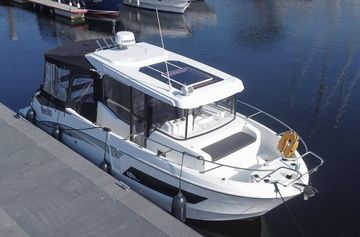

B-Atlas Boat Guide · BENE-BAR-9
Beneteau Barracuda 9 Sport-Fishing Pilothouse
2015–2020
The Beneteau Barracuda 9 is an enclosed walkaround sport-fishing cruiser from Beneteau's Barracuda line. Its planing hull, outboard propulsion, broad cockpit and optional upper helm on some versions emphasize fishing versatility and all-weather day use rather than displacement-speed passagemaking.

- Length
- 29.86 ft
- Beam
- 9.78 ft
- Draft
- 2.3 ft
- Hull behaviour
- Planing
- Fuel
- Gasoline
- Propulsion
- Outboard
- Engine configuration
- Twin outboards up to 250 hp each
- Boat family
- Cruiser
- Construction
- Fiberglass
Best for
- Fishing-focused coastal owners
- All-weather day boating
- Buyers wanting a practical outboard pilothouse
Trade-offs
- Accommodation is secondary to fishing and deck space
- Optional flybridge adds air draft and exposure
- Fuel use at planing speeds exceeds slow-cruiser expectations
Known concerns
- No model-specific concern has been promoted to B-Atlas’s evidence threshold. This does not mean the model has no age-, condition- or hull-specific risks.
Inspection focus
- Inspect outboard installation, steering and service history
- Inspect cockpit drainage, fishboxes and deck hardware
- Inspect pilothouse doors/windows and optional flybridge penetrations
- Verify actual engine count and options on the individual boat
Continue researching
Related boat models
Beneteau Antares 9 Series 1 / Series 2
29.92 ft · Planing
Beneteau Antares 8 Cruising / Fishing
26.42 ft · Planing
Beneteau Barracuda 8 Sport-Fishing Pilothouse
26.21 ft · Planing
Beneteau Antares 7 Cruising / Fishing
24.5 ft · Planing
Beneteau Antares 11 Coupé
36.58 ft · Planing
Beneteau Swift Trawler 30 Flybridge
32.75 ft · Semi-Displacement
About this record
B-Atlas preserves uncertainty: missing information remains unknown rather than being treated as a negative. Specifications and guidance describe the model record; individual boats can differ by year, equipment, refit and condition.